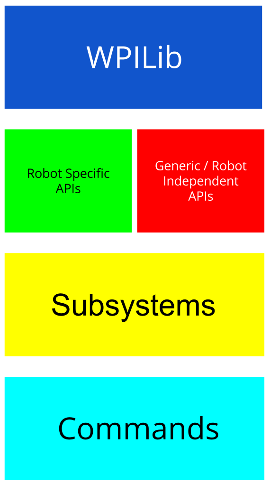

When creating a robot program, it is a good idea to define an architecture which must be followed throughout the development of the program. An architecture is just the structure of the program which defines the levels of abstraction and how the levels will be allowed to interact. In many cases, abstraction allows for more advanced programs to be created with more high level concepts such as move arm to the button instead of having to handle the specifics of the motors and vision processing.
Many teams use the command based programming model for writing the code for their robot. The framework provided by WPILib allows for the creation of subsystems, commands, and command groups which provides teams with a nice architecture to use if followed as designed. Below is an architecture that I find useful for effectively using the command based programming model at higher levels of abstraction:
This model allows for a one directional flow from the bottom (Commands) to the top (WPILib). This means that a subsystem can’t call a command (though default commands are allowed), and a robot specific API can’t reference a subsystem. Another implication of this architecture is that the code of one level can only interact with the code of the level directly below it. Following this flow, your program will become more robust to change in electronics or configuration. There will always be some exceptions to this architecture, but the goal of using an architecture is to minimize these exceptions.
Looking at the architecture diagram, each block serves a specific purpose at a different abstraction level. The lowest level is the WPILib code, which is the software provided to teams that allows direct access to motors and sensors. Since it is already created, we will not need to modify it. Next are the robot specific and generic APIs. The robot specific APIs consist of code that is specific to your robot only such as an elevator with limit switches at the top and bottom (this is an extension to RobotMap, which most teams are familiar with). In the robot specific APIs, you would define the sensors and actuators at their given ports and provide access to some of their methods (forward, backward, isTriggered, etc.). The generic APIs are robot independent, meaning if you were to use them on another robot, the APIs would not need modification. An example of a generic API is the Robot Vision API which I created as it can be used regardless of what robot you are using them on. The next level are the subsystems. The subsystems are robot and task specific and represent larger systems on the robot. These systems abstract away the fact that actuators or sensors are in use and allow for higher level usage. For example, you could have an arm subsystem which provides a method to move to a specific point in space without needing to know which motors to run and for how long. Finally, there are the commands, which use subsystems to complete a more complex task. A command can trigger an arm to move to a point and it will finish once the arm has reached its destination. Commands can also be chained together in the form of command groups which allow for different commands to run in order or simultaneously.
Let’s say that we are not following an architecture and our commands rely highly on the WPILib and underlying hardware. As a result of a few failed matches, we determine that we need to use a different type of sensor to detect if our arm is at the correct position. Where will we need to change our code? Well, since our code was reliant on the hardware being one way, and now we have different hardware, we must change our code in many places such as our specific APIs and our commands.
Now the same change occurred to our team, but now we are strictly following the architecture. The change need only happen in the robot specific APIs or the subsystem (in this case, most likely the robot specific APIs as the subsystem would gain the sensor data from the level prior to it without knowing what the specifics of the sensor is). Therefore, our code that follows the architecture is more robust to change.